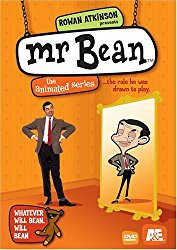

")
Alternativ: Mr. Bean: The Animated Series
 
 IMDB-Wertung: 6.8 / 10
IMDB-Wertung: 6.8 / 10  Metascore:
Metascore: 
Wo er auftaucht, nimmt man besser Reißaus! Die Warnung kommt nicht von ungefähr: Mr. Bean ist das, was man gemeinhin unter einer wandelnden Zeitbombe versteht. Es dauert nicht länger als einen Atemzug, und der Biedermann richtet in allen Zeitzonen der Welt heilloses Chaos an.Mogelpackung Mr. Bean! Sein Outfit: seit 100 Jahren out. Die Haare: könnten Mutti geschnitten haben. Der Gesichtsausdruck: zum Weggucken dämlich. Doch wehe, wenn der Loser losgelassen! Dann wird sein Mini-Cooper zum Möbelwagen, sein Ausflug in ein Hallenbad zur exhibitionistischen Peinlichkeit und sein Teddybär zum Auslöser für den Supergau.
Jahr: 2002
Dauer: 10 Minuten
FSK:
Land: England Studio: Super RTLTonspuren:
Untertitel:
Auflösung: SD (720x576) Größe: 87 MB
Genre: Komödie, Animation/Trick, Familie, TV-Serie
Regisseur: Aleksey Alekseev, Richard Purdum, Miklós Varga, Katalin Móré, Mihály Sikur, Andrey Ignatenko, Zhenia Pavlenko, Elena Rogova, Tim Fehrenbach, Tim Searle, Rachel Thorn
Drehbuch: Tiger Aspect Productions
Soundtrack:
Darsteller:
 Rowan Atkinson als Mr. Bean 43 episodes, 2002-2015
Rowan Atkinson als Mr. Bean 43 episodes, 2002-2015 Gary Martin als Additional Voices 24 episodes, 2002-2004
Gary Martin als Additional Voices 24 episodes, 2002-2004 Enn Reitel als Additional Voices / ... 6 episodes, 2002-2004
Enn Reitel als Additional Voices / ... 6 episodes, 2002-2004 Rupert Degas als Additional Voices 4 episodes, 2002-2003
Rupert Degas als Additional Voices 4 episodes, 2002-2003 William Roberts als Additional Voices 2 episodes, 2002-2004
William Roberts als Additional Voices 2 episodes, 2002-2004 Morwenna Banks als Many and various unknown episodes
Morwenna Banks als Many and various unknown episodesDatei: X:\Kinder Serien\Mr Bean Animated Series\Mr. Bean - 01a - Die Wildsnis ruft.avi seit 01.02.2018
Festplatte: Kinder-Filme+Trick
 Es gibt insgesamt 56 Filme in der Gruppe 'Kinder Serien'
Es gibt insgesamt 56 Filme in der Gruppe 'Kinder Serien'